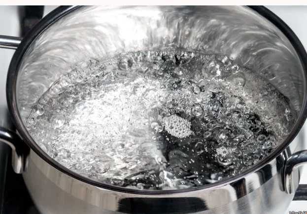
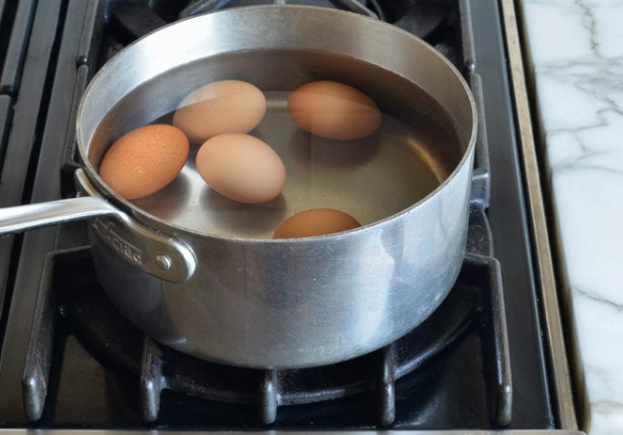
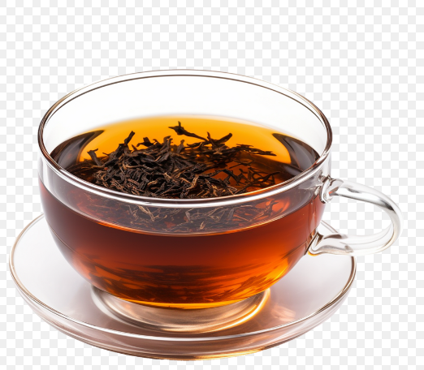
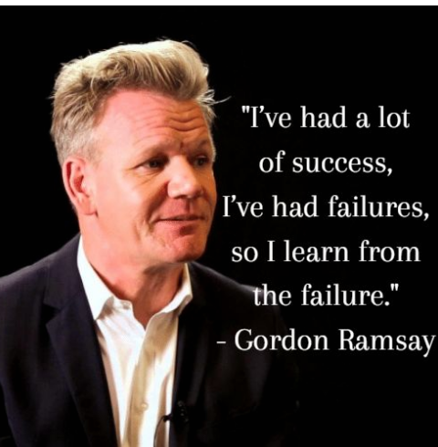

Boiled water

One of the very basic cooking skill to have is boiling water.
It is very beignner friendly and is the only skill that i have.
Boiled water has more health benifits than your friend with benifits.
From diarrhoea to constipation it can be help to cure them all.
Ingredients
- Water
- Salt (optional)
- Turmuric (optional)
Steps
- Add water into the pot
- Let it boil in any heating source (stove, electric heater etc)
- For those planning to take it a step further add salt and turmuric powder
- After it starts boiling take out the boiled water and drink it. Turmuric and salt will help you in curing minor feaver
and even covid (according to kp baa i.e Nepal's former prime minister)
Boiled egg

boiling an egg is fairly easy task. there are only few things that you need to do.
why even boil egg first? because it's high in protein and calories and easy to make.
In this post there's everthing you need to know about boiling an egg.
Ingredients
Steps
- Take a pot and fill it with water
- Take your egg and put it in a pot
- Add salt and vinegar. This helps to peal off the outer cover easily
- Boil for 10 to 15 minutes
- Take out the egg after 15 minutes and put it in cold water. Peal off the outer cover and enjoy your boiled egg
Black tea

If you know how to boil water then you must learn this.
A black tea is nothing but adding sugar and tea in boiled water.
It also has health benifits.
Ingredients
- Water
- Sugar
- Tea leaves or Tea
Steps
- Learn how to boiil water form above post
- After the water is boiled add sugar and Tea
- Let it boil for few minutes
- Serve it in a cup and enjoy your tea
if you failed to do any of the recipe above then don't worry our chef has something to say about you
